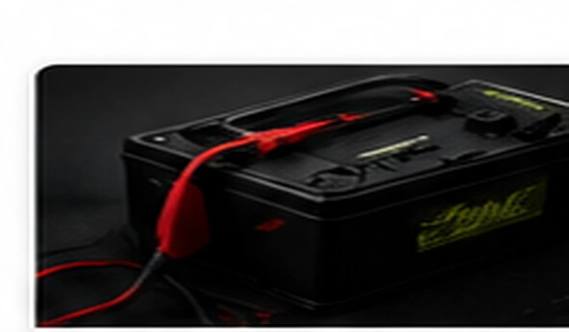

Common symptoms
- Slow or inconsistent cranking
- Battery warning light
- Repeated dead battery
- Low-voltage or communication codes

A weak battery, poor cable connection, starter load or alternator problem can create similar symptoms and may set faults in several modules. Oakline tests the complete starting and charging system.
Oakline provides mobile testing at homes and workplaces throughout Fayetteville and nearby communities.
Testing separates a bad battery from a charging, cable, starter or parasitic-draw problem before parts are replaced.
Serving Fayetteville, Hope Mills, Raeford, Spring Lake, Stedman, Eastover and surrounding areas.